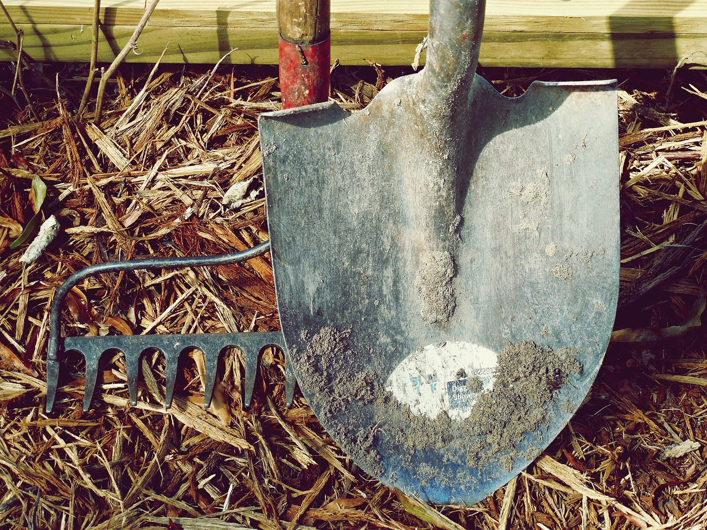
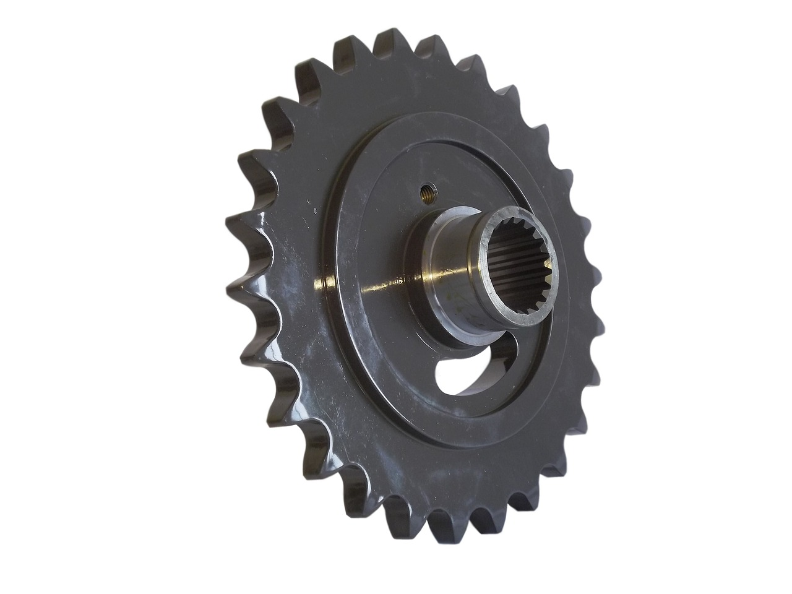

Colhendo os frutos do campo para construir um futuro promissor na cidade.
Explore o PortalExplore as diversas áreas do portal:

Encontre seu caminho profissional
- Vagas de trabalho atualizadas
- Dicas para currículo e entrevista
- Treinamentos e cursos online
- Mentoria personalizada

Histórias e Inspiração
- Depoimentos reais
- Perfis de profissionais
- Blog com artigos informativos

Orientação para a vida na cidade
- Guia completo para mudança
- Dicas de cultura e lazer
- Apoio para imigrantes

Comunidade e Networking
- Fórum online
- Grupos de interesse
- Eventos presenciais

Ferramentas e Recursos Úteis
- Calculadora de custos de vida
- Lista de contatos
- Dicas de saúde e bem-estar